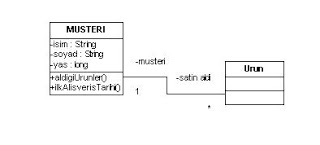

Nesnesel Programlama (Object-Oriented Programming)
Java veya diğer dillerde kodlama eylemi nesne etrafında dönmektedir. Merkezi yer tutan ve en küçük veri yapısını teşkil eden nesnelerin tasarımı, temiz bir mimari için çok mühim bir olaydır. Bu yazıda, nesne tasarımı hakkında bazı dersleri paylaşacağız. Tek Eylem Nesneleri Bu tür nesneler, tek bir işlem çevresinde yazılmıştır. Turnosol testi olarak 'bu nesnenin sistemdeki rolü nedir' sorusuna, 'bu nesne X yapar' cevabı alınmasıdır. Halbuki bir nesne, çok özel şartlar olmadıkça, birden fazla işlemin toplamı olmalıdır. Ünlü nesnesel tasarımcı Bertrand Meyer, bir nesneyi üzerinde düğmeler (işlemler), okuma göstergeçleri (sorgular) ve anlık durumu (state) olan bir makinaya benzetir. Örnek olarak bilgisayar bilimden yakınen bildiğimiz yığıt (stack) nesnesini gösterebiliriz. Yığıtta, üst noktayı işaret eden göstergeç bilgisi, kaç eleman olduğuna dair bir sayaç, ve eleman ekleyen/çıkartan işlemlerden oluşan bir yığıt sınıfı vardır.
İhtiyaca göre kullanıcı program, bu yığıt işlemlerini istediği sırada çâğırabilir. (Tabii nesnenin iç bütünlüğünü bozmadıkça, mesela boş bir yığıttan eleman çıkartmaya çalışmak gibi). Buna kıyasla, tek bir işlem etrafında yazılmış nesnelere şüphe ile bakmak gerekir. Bu tür nesneler, tasarımcısının işlevsel geçmişini yansıtıyor olabilir. Bir nesneyi, durumu, alışveriş listesi halindeki işlevleri, ve anlık durumu olan bir makina olarak görmeye başlamak lazımdır. Yan etkisi olan sorgular Yan etkisi olan sorgulardan kaçınılmalıdır.
Mesela,
public class Yığıt {
public void ekle(Object o) { .. }
public Object siradakiEleman() {
.. elemani bul.. yigittan cikart
return nesne;
}
}
Bu örnekteki siradakiEleman sorgusunun yan etkisi var, çünkü, hem sıradaki elemanın ne olduğunu söylemekte, hem de bu elemanı yığıttan çıkartmaktadır. Bu sebeple aynı sorgu iki kere üst üste çâğırıldığında, aynı sonuç gelmeyecektir. Bu tür bir sorgu, o sorguyu taşıyan nesneyi kullananlar için karışık bir durum yaratır. Makina örneğine dönersek, bir termometreye baktığınız ve sıcaklığı okuduğunuz her seferde sıcaklık değerinin değişmesi nasıl olurdu? Çok karışık olurdu değil mi? Nesneler üzerindeki sorgu tasarımı da böyledir. Kullanıcı programcılar açısından üst üste ne kadar çağırılsa da, sorgu çağırımının, nesnenin anlık durumunu değiştirmeyecek şekilde yazılmış olması, tasarım açısından çok önemlidir. Yukarıdaki nesne, şu şekilde değiştirilmelidir.
public class Yığıt {
public void ekle(Object o) { .. }
public Object siradakiEleman() {.. elemani bulreturn nesne;}
public void siradakiElemaniCikart() {
.. elemani bul.. yigittan cikart}..
}
}
Anlık Nesneler Nesnesel teknoloji kullanan projelerde, programcıların çoğunun programın çalışması esnasında anlık hafızaya alınıp hemen atılacak türden nesneleri, her nedense nesneden saymadığını görüyoruz. Meçhul bir sebepten dolayı, nesnelerin illâ ki uzun süre hafızada kalması gereken şeyler olduğunu zanneden programcı arkadaşlarımız var. Burada herhalde sorumlu olan, nesnesel tasarımı sürekli gerçek dünya nesnelerine bağlayarak anlatan, benzetimsel bir hava içinde sunan belgeler olmuştur. O zaman dersimiz şöyle olabilir: Bir nesneyi hafızaya yükleyip orada uzun süre tutmak ile, nesneyi yükleyip gereken işlemleri çağırıp hemen atmak arasında, bilgisayar donanımı için hiç bir fark yoktur. Eğer her iki şart altında da işlem1, işlem2 ve işlem3 çâğırıldı ise, nesnemizin anlık durumu işlem3'ten sonra her iki şartta da aynı olacaktır.
Galiba, hemen yüklenip, kullanılıp, atılan nesneler programcılara Tek Eylem Nesnesi gibi geliyor. Bu yanlış bir saptamadır. İşlem1, işlem2, işlem3'ten bahsettiğimizi hatırlayınız. Bu işlemleri arka arkaya çağırdık, fakat diyelim ki 1 milisaniye içinde çâğırdık. Ama nesne açısından 1 milisaniye içinde 3 işlem câğırılması ile, 10 saniye içinde aynı işlemlerin çağırılmasının hiç bir farkı yoktur. Bu yüzden, bu şekilde çabuk yüklenen/atılan nesneleri kullanın. Yardımcı nesne olmaları açısından mimarinize temizlik katacaklardır. Sürekli Gönderilen Bildirgeç Eğer nesneninizdeki işlevlere gönderilen bildirgeçler, sürekli aynı bir bildirgeç tipini taşıyorsa, bu tanımlanmamış yani eksik olan bir nesnenin göstergesidir. Mesela aşağıdaki gibi bir nesne düşünelim:
public class Isleyici {
public void birIslem() {}
public void baskaBirIslem() {}
public void ekle(Object bunu, Vector bunaEkle) {......}
public Object cikart(Vector bundanCikart) { ... }
}
Gördüğümüz gibi aynı Vector nesnesi sürekli olarak Isleyici nesnesinin işlemlerine gönderiliyor. Niye? Üzerinde işlem yapılsın diye. Fakat, bize göre bu tür bir nesne tasarımı, işlevsel tasarım kokuyor, nesnesel değil. Sürekli tekrar eden bildirgeçler, eksik olan bir nesnenin işareti ise, demek ki, Vector'ü kapsayan (encapsulate) etmesi gereken bir nesne eksik. Nesneler, anlık durumları olan ve bu durumu hatırlayabilen kavramlardır. Bu özelliği kullanalım: Vector gibi bir değeri sadece bir kere gönderip, bu Vector'ün bu yeni kapsayan yeni nesne tarafından muhafaza edilmesini sağlamalalıyız. Bu yapıldıktan sonra, artık sonraki bütün işlemler içerde tutulan Vector üzerinde yapılacaktır, yani Vector'ün bir daha geçilmesine gerek kalmaz.
public class VectorYığıtı {protected int tepeIndisi = ...;protected Vector vector = null;public VectorYığıtı(Vector v) {vector = v;}public void ekle(Object eleman) {vector.add(eleman);}public Object cikart() {...return vector.get(tepeIndisi);}}public class Isleyici {public void birIslem() {}public void baskaBirIslem() {}}
İşte bu kadar! Böylece İşleyici nesnesi daha anlaşılır hale geldi, ve yeni VectorYığıtı nesnesi çok daha temiz.

Instanceof, Çokyüzlülük (Polymorphism)
Nesnesel dillerin ve yöntemlerin eniyileştirme sağladığı alanlardan birisi, tip idaresidir. Tip idaresi, programcının kendi tiplerini (class'lar sayesinde) kendisinin yaratmasını, ve bu tipler arasında hiyerarşik ilişkiler kurmasını sağlar. Her kitap tarafından oldukça önem verilerek anlatılan kalıtım özelliği (inheritance), bu bağlamda buzdağının sadece gözüken kısmı olmaktadır. Kalıtım, bizi aynı kodu tekrar tekrar yazmaktan kurtarır, doğrudur. Fakat tek başına kalıtımla elde ettiğimizi daha modüler kodlarla da elde edebilirdik. Kalıtımı daha da güçlü hâle getiren ikinci bir teknik daha vardır: Çokyüzlülük (polymorphism). Çokyüzlülük bizi şu şekilde kodlar yazmaktan kurtarır.
public class Cizer {
public void metot (ParametreClass obj) {
if (obj instanceof Ucgen) {
ucgenCiz(obj);
}
if (obj instanceof Dikdortgen) {
dikdortgenCiz(obj); }
if (obj instanceof Kare) {
kareCiz(obj); }}...
}
Java programlarının %99.9'unda instanceof kullanımı görmemelisiniz. Tekrar söylüyorum: instanceof, nesnesel tasarımın ve tavsiyelerinin tam zıttıdır. Gördüğünüz yerde yokediniz, gördüğünüz yerde çokyüzlülük ve kalıtım kullanarak düzeltiniz. Yukarıdaki örnek, tipik bir nesnesel tasarım problemidir. Cizer class'ının her grafik nesne için tanımlanmış cizXX metotları, Cizer class'ından çıkartılıp, ait oldukları grafik nesnelerin class'larına taşınmalıdır. Metot ucgenCiz, Ucgen class'ına, metot dikdortgenCiz, Dikdortgen class'ına ve metot kareCiz, Kare class'ına taşınmalıdır. Çokyüzlülük için de: Kodu öyle hâle getirmeliyiz ki, "cağıran" nesne, çağırılan nesnenin tipinden habersiz olsun, böylece her biri "sorarak" if kullanması gerekmesin. O zaman, ciz metotlarını taşırken, hepsinin isimlerini ortak yapıp, tüm grafik class'larına ortak bir class'da bu metotu tanımlayacağız.
// Tum grafik nesne class'larının ortak class'ı
public class GrafikNesne {
public void abstract ciz();
}
public Ucgen extends GrafikNesne {
public void ciz() {
//Cizer.ucgenCiz metotunun icerigi buraya ..
}
}
public Dikdortgen extends GrafikNesne
{
public void ciz()
{
... Cizer.dikdortgenCiz metotunun icerigi buraya ..
}
}
public Kare extends GrafikNesne {
public void ciz() {
.. Cizer.kareCiz metotunun icerigi buraya ..
}
}
Bu değişimden sonra artık kodun herhangi bir yeri Ucgen, Dikdortgen, Kare nesnelerinden birini yaratıp, GrafikNesne referansı üzerine atama yaparsa, bu referans üzerinden yapılan ciz() metotu çağrıları, ciz() GrafikNesne üzerinde tanımlanmış olduğundan (ama gerçekleştirimi (kodlaması) alt kalıtım yapan nesneler üzerinde olduğundan) işleme anı sırasında ufak bir JVM kontrolü yaparak aktif nesnenin esas tipini öğrenecek, ve ciz() çağrısını doğru tipteki nesneye gönderecektir. Tüm bu kontroller için programcının kılını kıpırdatmasına gerek yoktur.
public class HerhangiBirClass { public void ciz() { GrafikNesne nesne = new Ucgen(); // dikkat, Ucgen nesne = new Ucgen degil!!! .. nesne.ciz(); }}
Bu aynı satırda yapılan yaratma ve anında kullanma vadedilen avantajlar açısından sizi hayal kırıklığına uğratmasın. Onbinlerce satırlık bir kodun ta bir ucunda yaratılmış bir Ucgen nesnesinin, öteki ucunda, başkasının yazmış olduğu bir metot gönderildiğini düşünün. Alan metot, soyutluk seviyesi bakımından grafik nesnesinin ciz() metotunu "kabul ettiği haricinde" daha fazla bir bilgiyle ilgilenmeme gibi bir sânsı artık elinde vardır. Böylece elindeki referansı GrafikNesne seviyesinden daha aşağıda tutmasına gerek yoktur. Böylece, ileriki bir günde yeni bir GrafikNesne kodlandığında (Beşgen diyelim), hiçbir ana listenin, hiçbir merkezi noktanın değişmesine gerek kalmayacaktır. Tüm ciz() metotlarıni çağıranlar aynı şekilde çağırmaya devam edeceklerdir, çünkü ellerindeki GrafikNesne class'ı halen statik olarak geçerli bir referanstır (Beşgen de GrafikNesne'den kalıtım yapacaktır, ve ciz() metotunu tekrar tanımlayacaktır). Instanceof yöntemini kullanıyor olsaydık, "büyük" listemize bir de instanceof Besgen gibi bir ibare eklememiz gerekecekti. Nesnesel yöntemlerde buna hiçbir gerek yoktur. Tip kontrolleri, düzgün yapılan nesnesel model üzerinden JVM tarafınan otomatik olarak yapılabilen birşeydir. Makinanın yapacağını, makinaya bırakalım.
Referans
Nesnesel Tasarim, Kurumsal Java Kitabindan, PDF
Yukarı